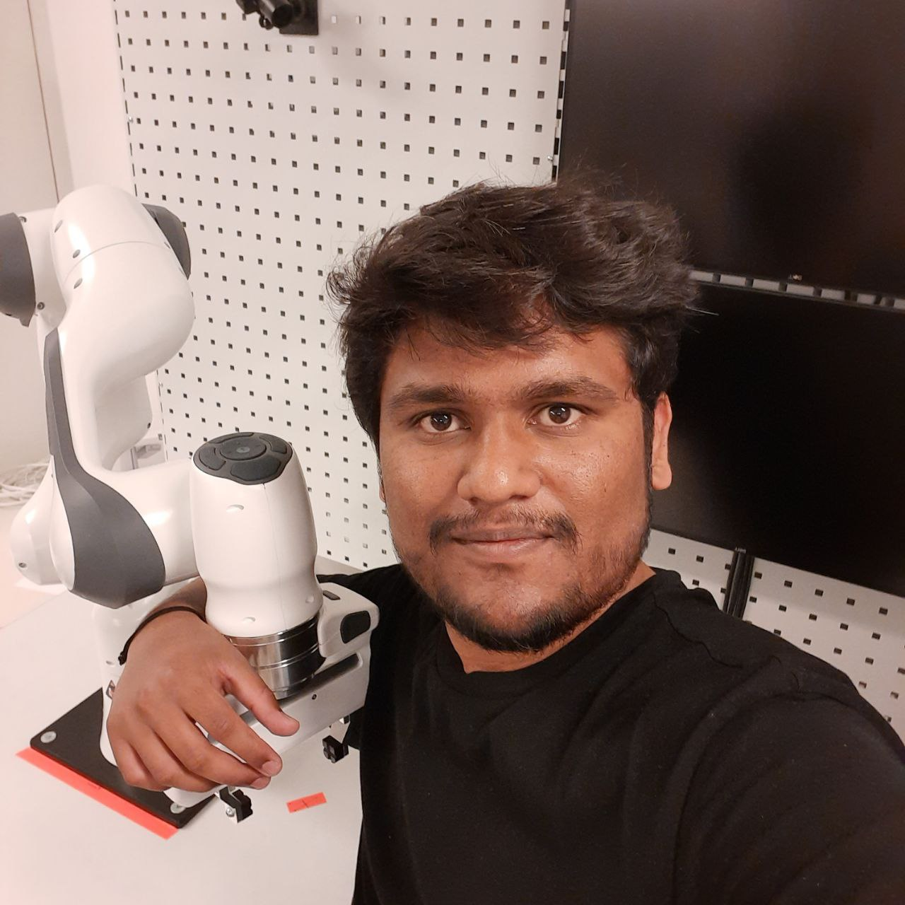

|
Omkar
Bhoite
Upcoming PhD Student at NTNU, Norway. Graduated with maters in Robotics & AI with specialization in Computer Science for Autonomous Driving, from KTH Royal Institute of Technology [Sweden] & exchange student at Eötvös Loránd University [Hungary]. |
 |
ResearchPassionately curious about robots, AI, machine learning, mathematics, computer vision, sensor systems & physics. |